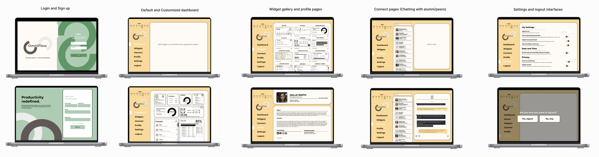
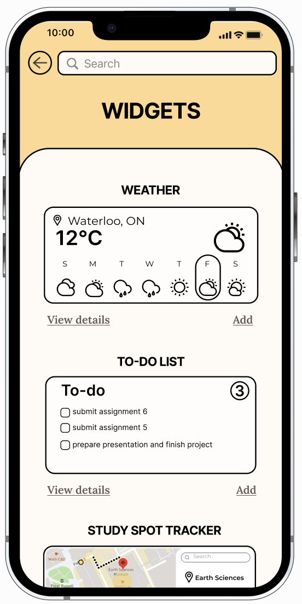
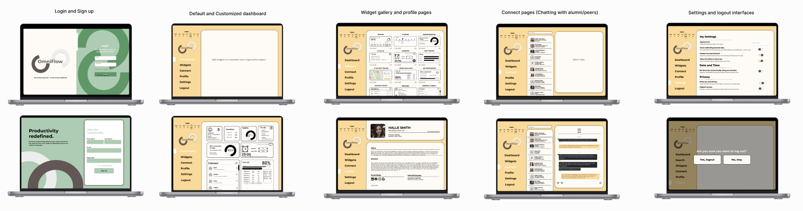
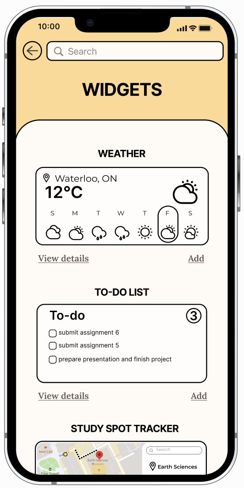

We conducted interviews with the targeted users for OmniFlow, both undergraduate and graduate students, as the preliminary step in the design process. More specifically their organization, study, and well-being habits. The results of these interviews guided the development of OmniFlow, ensuring it aligns seamlessly with the needs of University of Waterloo students.
Our mission is fueled by a recognition of a prevalent issue in the app landscape—complexity and difficulty in usability. Many existing applications, including time management tools, suffer from intricate interfaces and convoluted features, leading to user frustration and avoidance. Particularly for students, the demanding nature of these apps, coupled with their busy schedules, results in a tendency to neglect time management tools altogether.
In response, our goal is to develop an all-encompassing multi-management application with a user-friendly interface. Accessible from both computers and mobile devices, our app addresses the usability challenge by simplifying time management. We envision a solution that not only streamlines the academic journey for University of Waterloo students but also fosters a positive and enduring impact by providing an accessible and beneficial tool for effective time management.
Many students used more than one organization system to manage their academic and personal lives. If they input events on one application and not the other in return reduces productivity and task completion.
To have users be able to view which deadline to prioritize and how much time they have until that deadline.
Necessary for users to note important dates and organize their schedules, one of the main features to help with managing their schedules.
This encourages the social aspect of our app. Many students find it difficult to find available study spaces because there are so many that are unknown, especially on different campuses. Thus, users can use this to find a spot to complete their tasks with the possibility of socializing with other students.
Goes beyond the simple deadline tracker and helps users manage tasks to help them keep their work-life balance. Ex. Tasks will be 3 checkpoints embedded in the tool.
Included for users to keep track of day to day tasks and stay on top of work/personal responsibilities. Simple and quick feature to motivate getting tasks done and checked off.
From our discoveries, we determined the tentative features our app must include.
- Separated Workspace (Professional and Student)
- Leader board
Based on the HE, there needs to be changes to the widget section. This includes accessing widgets and differentiating widgets to users who do not know the application.
Changes:
- Add a tab on the navigation instead of a button on the homescreen. This way users can clearly see the label to access the widget function.
- Each widget now includes:
- Labeled descriptions for a brief overview of purpose and functionality
- Preview pictures for visual representation.
Clear navigation system to show the main components of OmniFlow.
Changes:
- Refine navigation system to focus on the essential components
- Removal of redundant features, emphasizing universal functions like “connect” for efficiency
For all users, we found it was necessary to have a simplistic look to our interface. This was because some participants were overwhelmed with the amount on the screen at once.
Changes:
- Minimalistic design for the overall interface
- Optimization of the layout to maintain efficiency while reducing visual complexity
 

Key Takeaways
Emphasizing the Significance of Process


Key Takeaways
Emphasizing the Significance of Process
- Recognizing the tendency to overlook research and early prototyping.
- Understanding the pitfalls of diving directly into Figma, focusing on visual aesthetics prematurely.
- Utilizing UX shorthand and paper sketches to maintain focus on the task and avoid getting carried away with visual elements.
- Acknowledging the diverse perspectives within the team about the app's direction.
- Realizing that effective design is powered by collaboration.
- Engaging with team members and potential users to introduce varied viewpoints.
- Overcoming the belief in a single designer's vision.
- Embracing diverse perspectives to enrich the design process.
- Resulting in a more comprehensive and well-rounded design.
UX/UI Researcher, Project Manager, Technical Writer, Heuristic Evaluator/Conductor, Desktop Prototype Lead